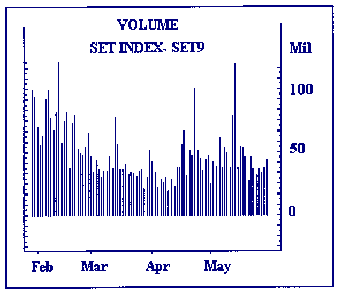
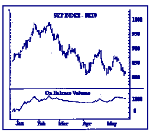
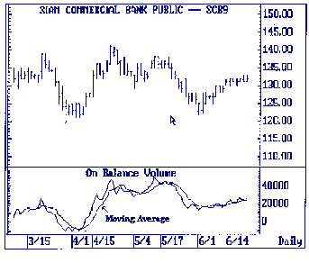
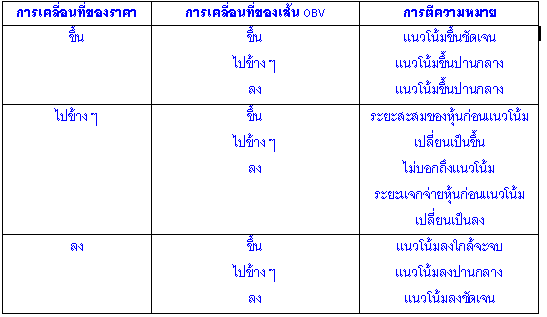
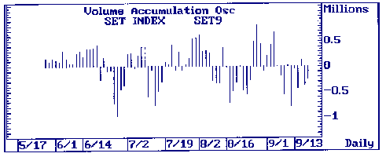

| << | 7 | >> |
การวิเคราะห์หลักทรัพย์โดยวิธีทางเทคนิค ปริมาณการซื้อขาย (Volume)
ปริมาณการซื้อขาย VOLUME (VOL)
VOLUME คือ ปริมาณการซื้อขายของหุ้น โดยความสัมพันธ์ระหว่างราคากับปริมาณการซื้อขาย
มีข้อสังเกตดังนี้ :
ความสัมพันธ์ในแง่บวก
1. เมื่อราคาปรับตัวสูงขึ้นจากช่วงเวลาก่อน และปริมาณการซื้อขายปรับตัวสูงขึ้น
จะเป็นการสนับสนุนการขึ้นของราคา
2. เมื่อราคาที่พุ่งสูงขึ้น ต่อมามีการปรับตัวลง หากปริมาณการซื้อขายปรับตัวลดลงด้วย
จะเป็นการแสดงถึงการลดลงชั่วคราวของราคา ก่อนที่จะมีการปรับตัวสูงขึ้นของราคาอีกครั้งหนึ่ง
3. การขายอย่างตื่นตระหนก (PANIC SELLING) เกิดขึ้นจากราคาที่มีการลดลงมาเป็นระยะเวลานาน
และต่อมาราคาตกดิ่งลงในขณะที่ VOLUME กลับเพิ่มมากขึ้น ถือเป็นช่วงวิกฤติการขาย
(SELLING CLIMAX) ซึ่งมักจะเป็นจุดต่ำสุดของตลาดหรือหุ้น เพราะบ่อยครั้งที่วิกฤติการขาย
(SELLING CLIMAX) จะเป็นจุดจบของ BEAR MARKET
ความสัมพันธ์ในแง่ลบ
1. เมื่อราคาปรับตัวสูงขึ้นจากช่วงเวลาก่อน แต่ปริมาณการซื้อขายกลับลดลง จะเป็นการค้านการขึ้นของราคา
2. เมื่อราคาที่ลดลง ต่อมามีการปรับตัวขึ้น แต่หากปริมาณการซื้อขายลดลง จะเป็นการค้านการขึ้นราคาในขณะนั้น
3. เมื่อราคาวิ่งขึ้นกลับไปถึงจุดสูงเก่า แต่ VOLUME ไม่มากเท่ากับ VOLUME ของจุดสูงเก่า
จะเป็นการค้านการขึ้นของราคา และอาจนำไปสู่การปรับตัวลงของราคาในช่วงต่อไป
4. เมื่อราคากับ VOLUME ขึ้นไปด้วยกันช้า ๆ จนถึงระดับหนึ่งแล้ว ราคาวิ่งขึ้นอย่างรวดเร็วโดย
VOLUME ได้สูงมากขึ้นผิดปกติ และถ้าหลังจากนั้นราคาเริ่มลดต่ำลง จะถือว่า ณ จุดนั้นเป็นการเปลี่ยนแนวโน้มจากขึ้นเป็นลง
5. ถ้าราคาสูงขึ้นมาเป็นระยะเวลานาน และเมื่อมาถึงจุดที่ราคาขยับขึ้นเล็กน้อย แต่
VOLUME กลับยังคงสูงมาก จะเป็นสัญญาณเตือนว่ามีการขายระบายหุ้นออกในลักษณะของการโยนหุ้น
(มีการซื้อขายกันระหว่างกลุ่มเพื่อไม่ให้ราคาตก) ซึ่งอาจนำไปสู่การปรับตัวลงของราคาในช่วงต่อไป
TICK VOLUME
TICK VOLUME เป็นเครื่องมือในการประมาณการซื้อขายของหุ้น
หรือสัญญา (FUTURE CONTRACT) ในระหว่างวัน โดยการนับจำนวน TICK (การซื้อขายที่เกิดขึ้นแต่ละครั้ง)
TICK VOLUME ของสัญญาซื้อขายล่วงหน้า จะเป็นการนับจำนวนครั้งที่ราคาเปลี่ยนแปลงในช่วงเวลาหนึ่ง
โดยไม่คำนึงถึงจำนวนครั้งของการซื้อขายสัญญาในราคาหนึ่ง
TICK VOLUME ของการซื้อขายหุ้น จะหมายถึงจำนวน TICK (การซื้อขายที่เกิดขึ้นแต่ละครั้ง)
ที่เกิดขึ้นในช่วงเวลาหนึ่ง ๆ
ดังนั้นหาก TICK VOLUME มีค่ามาก จะเป็นการแสดงให้เห็นว่าในช่วงเวลานั้น ๆ มีปริมาณการซื้อขายมากด้วย
 |
ดัชนีปริมาณหุ้นสะสม
ON BALANCE VOLUME (OBV)
ดัชนีปริมาณหุ้นสะสม (OBV) เป็นเครื่องมือที่ดูความสัมพันธ์ระหว่างปริมาณการซื้อขาย
(VOLUME) กับการเคลื่อนไหวของราคา ซึ่งสามารถบอกถึงแนวโน้มของตลาดหรือหุ้นได้ โดยใช้หลักของ
DEMAND-SUPPLY ที่ระบุว่า ราคาหุ้นจะไม่ขึ้นจนกว่า DEMAND จะมากกว่า SUPPLY
ดัชนีปริมาณหุ้นสะสม คือ การดูปริมาณหุ้นซื้อขายสะสม
โดยนำเอาปริมาณซื้อขายไปบวก เมื่อราคาปิดของวันนั้นสูงกว่าราคาปิดของวันก่อน และเอาปริมาณซื้อขายไปลบ
เมื่อราคาปิดของวันนั้นต่ำกว่าราคาปิดของวันก่อน ถ้าปริมาณหุ้นสะสมเปลี่ยนแปลงเพิ่มมากขึ้นชัดเจนกว่าราคา
แสดงว่ากำลังมีเงินจากผู้ลงทุนบางรายเข้ามาซื้อสะสมหุ้นมากขึ้น แต่ถ้าทั้งราคาและปริมาณสะสมวิ่งขึ้นไปด้วยกัน
หมายถึงผู้ลงทุนทั่วไปเข้ามาทำการซื้อขายร่วมด้วย ส่วนถ้าราคาขึ้นก่อนปริมาณสะสม
ยังไม่ถือว่าเป็นการยืนยันการขึ้นของราคาหุ้นแต่อย่างใด
 |
วิธีหาค่าของ OBV สามารถทำได้ดังนี้ :-
1. ผู้ลงทุนต้องเลือกตัวเลขปริมาณหุ้นเริ่มแรก อาจจะเป็น O หรือ 1,000 หรือ 10,000
หรือตัวเลขอื่นก็ได้
2. ถ้าราคาปิดของหุ้น ณ วันที่เริ่มคำนวณสูงกว่าราคาปิดของวันก่อน ก็ให้นำปริมาณหุ้นที่ซื้อขายกันสำหรับหุ้นในวันนั้น
บวกเข้ากับตัวเลขเริ่มแรก แต่ถ้าราคาปิดของหุ้น ณ วันที่เริ่มคำนวณต่ำกว่าราคาปิดของวันก่อน
ก็จะนำปริมาณหุ้นที่ซื้อขายในวันนั้นไปลบออกจากตัวเลขเริ่มแรกนั้น
3. ถ้าราคาปิดของหุ้นในวันปัจจุบันสูงขึ้นจากวันก่อน ให้นำปริมาณการซื้อขายของวันปัจจุบันมาบวกเข้ากับ
ปริมาณการซื้อขายสะสมจากวันก่อน แต่ถ้าราคาปิดต่ำลง ให้นำปริมาณการซื้อขายของวันปัจจุบัน
มาหักจากปริมาณการซื้อขายสะสม ถ้านำค่าปริมาณการซื้อขายสะสมไปกำหนดเป็นเส้นกราฟจะได้เส้น
OBV ที่นำไปใช้วิเคราะห์แนวโน้มหรือทิศทาง (DIRECTION) ของราคาหรืออาจเขียนในรูปสูตรได้ใน
2 กรณี ดังนี้
กรณีราคาปิดวันนี้สูงกว่าราคาปิดวันก่อน
OBV วันนี้ = OBV สะสมจากวันก่อน + ปริมาณการซื้อขายวันนี้
กรณีราคาปิดวันนี้ต่ำกว่าราคาปิดวันก่อน
OBV วันนี้ = OBV สะสมจากวันก่อน - ปริมาณการซื้อขายวันนี้
เส้น OBV ควรจะมีแนวโน้มไปในทิศทางเดียวกับแนวโน้มราคา (CONFIRMATION) คือถ้าราคามีแนวโน้มสูงขึ้น
(UPTREND) เส้น OBV ก็ควรจะมีแนวโน้มสูงขึ้นด้วย ซึ่งเป็นสัญญาณว่าราคาหุ้นนั้นยังมีแนวโน้มไปในทิศทางเดิมอยู่
เนื่องจากมีแรงซื้อเข้ามาสนับสนุนมากพอ แต่ถ้าราคามีแนวโน้มต่ำลง (DOWNTREND) เส้น
OBV ก็ควรมีแนวโน้มต่ำลงด้วย
แต่ถ้า OBV มีทิศทางต่างกันกับแนวโน้มของราคา (DIVERGENCE) อาทิเช่น เส้นราคาไต่ระดับสูงขึ้น
แต่เส้น OBV มีแนวโน้ม ลดต่ำลงก็จะเป็นสัญญาณว่าแรงซื้อได้อ่อนตัวลง และอาจทำให้ราคาเปลี่ยนทิศทางเป็นลงได้
การใช้เส้น OBV เพื่อประโยชน์ในการวิเคราะห์แนวโน้มของราคานั้นสามารถแยกวิเคราะห์ได้ดังนี้
1. ถ้าราคาหุ้นมีราคาสูงสุดครั้งใหม่พร้อมกับ OBV ด้วย หรือราคาหุ้นลดลงเป็นราคาต่ำสุดครั้งใหม่พร้อมกับเส้น
OBV จะเป็นการยืนยันการขึ้นและลงของราคาหุ้น แต่ถ้าราคามีแนวโน้มลดลงในขณะที่แนวโน้มของเส้น
OBV ยังสามารถขยับสูงขึ้นเป็นค่าสูงสุดครั้งใหม่ จะเป็นการยืนยันว่าราคาจะต้องขยับสูงขึ้นอีกครั้ง
2. โดยการใช้เส้นแนวโน้ม (TRENDLINES) เป็นเส้นแนวต้าน หรือเส้นสนับสนุน เมื่อเส้น
OBV ตัดผ่านเส้นแนวต้าน เป็นสัญญาณว่าแนวโน้มของราคาจะขึ้น
3. โดยการใช้เส้นค่าเฉลี่ยเคลื่อนที่ (MOVING AVERAGE) สัญญาณซื้อเกิดขึ้นเมื่อเส้น
OBV มีลักษณะอยู่ในแนวโน้มขึ้นและตัดเส้นค่าเฉลี่ยเคลื่อนที่ขึ้น และสัญญาณขายเกิดขึ้นเมื่อเส้น
OBV กำลังลดลงและตัดเส้นค่าเฉลี่ยเคลื่อนที่ลง
 |
การตีความหมายของเส้น OBV
 |
ดัชนีแสดงความสมดุลของปริมาณการซื้อขายโดยเฉลี่ย
AVERAGE BALANCE VOLUME (ABV)
ดัชนีแสดงความสมดุลของปริมาณการซื้อขายโดยเฉลี่ย (ABV) เป็น เส้นค่าเฉลี่ยเคลื่อนที่ของเส้นดัชนีปริมาณหุ้นสะสม
และระยะเวลาที่นำมาหาเส้นค่าเฉลี่ยนั้น ก็ขึ้นอยู่กับผู้ใช้เป็นผู้กำหนด แต่ที่นิยมคือ
เส้นค่าเฉลี่ย 10 วัน, 25 วัน, 75 วัน และ 200 วัน ถ้าเส้น ABV หักหัวขึ้น แสดงว่า
ราคาหุ้นมีแนวโน้มที่จะขึ้น ในทางกลับกันถ้าเส้น ABV หักหัวลง แสดงว่าราคาหุ้นมีแนวโน้มที่จะลง
ดัชนีแสดงปริมาณการซื้อขายสะสม CUMULATIVE VOLUME (CV)
เนื่องจากดัชนีปริมาณหุ้นสะสม (OBV) ไม่สามารถอธิบายแนวโน้มตลาดได้ละเอียดเพียงพอ
และอาจจะไม่ตรงกับสภาพตลาดจริง ๆ ที่เกิดขึ้น ดังนั้น CUMULATIVE VOLUME
(CV) จึงถูกพัฒนาขึ้นมา โดยการให้น้ำหนัก (WEIGHT) ต่อการเปลี่ยนแปลงของราคาจากวันก่อน
และปริมาณซื้อขายในวันนั้น ๆ โดยให้ราคาปิดของวันนั้น เป็นเกณฑ์วัดการเปลี่ยนแปลงของราคา
ถ้าราคาปิดสูงกว่าราคาปิดวันก่อน ค่า CV ก็จะมีค่าเพิ่มขึ้นมากน้อยตามการเปลี่ยนแปลงของราคา
คูณด้วย VOLUME ถ้าราคาปิดต่ำกว่าราคาปิดวันก่อน ค่า CV ก็จะมีค่าลดลงมากน้อยตามการเปลี่ยนแปลงของราคาคูณด้วย
VOLUME
CV = ((Closet - Closet-1) *Volumet) + CVt-1
ถ้าค่า CV มีค่าเพิ่มขึ้น แสดงว่า มีผู้ซื้อเก็บมากกว่าที่จะขายออก เมื่อมีแรงซื้อสะสมหุ้นมากขึ้น
ราคาจะมีแนวโน้มเป็นบวก แต่ถ้าค่า CV มีค่าลดลง แสดงว่ามีการกระจายหุ้นออกไป หรือมีแรงขายมากนั่นเอง
เมื่อนำค่า CV ที่ได้ในแต่ละวันมาแสดงเป็นกราฟเส้นในแผนภูมิ จะได้เส้นแนวโน้มหรือทิศทางของราคาและปริมาณการซื้อขายหุ้น
ซึ่งสามารถนำไปวิเคราะห์โดยใช้หลักการเช่นเดียวกับการวิเคราะห์ OBV
เครื่องมือแสดงการเหวี่ยงตัวของการสะสมและการระบายหุ้น VARIABLE
ACCUMULATION/DISTRIBUTION (VAD)
VAD คือค่าเฉลี่ยเคลื่อนที่ (MOVING AVERAGE) ของ OSCILLATOR ซึ่งแสดงถึง การสะสมของปริมาณการซื้อขายหุ้น
โดยเป็นการเปรียบเทียบราคาปิด กับราคาเปิดของช่วงนั้น ๆ เพื่อที่จะดูแนวโน้มของตลาดในช่วงนั้นว่า
เป็นระยะสะสม (ACCUMULATION) ซึ่งค่า VAD จะอยู่เหนือระดับเส้น 0 เนื่องจากราคาปิดสูงกว่าราคาเปิด
และมีปริมาณการซื้อขายสนับสนุนเพียงพอ หรือว่าเป็นระยะจำหน่ายจ่ายแจก (DISTRIBUTION)
ซึ่งค่า VAD จะอยู่ต่ำกว่าระดับเส้น 0 เนื่องจากราคาปิดต่ำกว่าราคาเปิด โดยมีปริมาณการซื้อขายสนับสนุน
โดย OSCILLATOR และ VAD มีสูตรการคำนวณ ดังนี้
Oscillator = CLOSE - OPEN *VOLUME
HIGH - LOW
VADn = (OSCt + OSCt-1 +
+ OSCt - n+1)/ln
หมายเหตุ
ACCUMULATION (ระยะสะสม) เป็นการคาดการณ์ว่าแนวโน้มของราคาหุ้นหรือตลาดจะขึ้น (BULL
MARKET)
DISTRIBUTION (ระยะจำหน่ายจ่ายแจก) เป็นการคาดการณ์ว่าแนวโน้มของราคาหุ้นหรือตลาดจะลง
(BEAR MARKET)
หลักการวิเคราะห์
ถ้าเส้น VAD ตัดเส้น O ขึ้น เป็นสัญญาณให้ซื้อ
ถ้าเส้น VAD ตัดเส้น O ลง เป็นสัญญาณให้ขาย
สัญญาณซื้อขายที่เกิดจาก VAD นี้ควรจะสอดคล้องกับแนวโน้มของราคาด้วย
ดัชนีการแกว่งของปริมาณการซื้อขายสะสม VOLUME ACCUMULATION
OSCILLATOR (VAO)
เส้น VAO เกิดจากการนำค่า VOLUME ACCUMULATION (VA) มาสร้างเป็น OSCILLATOR (ดัชนีการแกว่งตัว)
โดยค่า VA เป็นการให้น้ำหนัก (WEIGHT) ต่อราคาและปริมาณซื้อขายในช่วงวันนั้น ๆ
ว่ามีน้ำหนักค่อนไปในทางใด โดยให้ราคาเฉลี่ย (ราคากลาง) ของวันนั้น เป็นเกณฑ์วัดการเปลี่ยนแปลงของราคา
ถ้าราคาปิดสูงกว่าราคาเฉลี่ย ค่า VA จะมีค่าเป็นบวกตามอัตราส่วนของราคาปิดต่อราคาเฉลี่ย
ถ้าราคาปิดต่ำกว่าราคาเฉลี่ย ค่า VA จะมีค่าเป็นลบตามอัตราส่วนของราคาปิดต่อราคาเฉลี่ย
และถ้าหากราคาปิดเท่ากับราคาสูงสุด ปริมาณการซื้อขายของวันนั้นจะมีค่าเป็นบวกทั้งหมด
แต่ถ้าราคาปิดเท่ากับราคาต่ำสุดปริมาณการซื้อขายของวันนั้นจะมีค่าเป็นลบทั้งหมด
วิธีการสร้างเส้น VAO เกิดจากการสร้างค่าเฉลี่ยเคลื่อนที่ 3 วัน และ 10 วันจากค่า
VA จากนั้นก็นำส่วนต่างของเส้นค่าเฉลี่ยเคลื่อนที่ 3 วัน และ 10 วัน มาสร้างเป็นเส้น
(LINE) หรือแท่ง (HISTOGRAM) โดยมีเส้น 0 เป็นแกนกลาง
โดย VA และ VAO มีสูตรการคำนวณ ดังนี้
VA = (CLOSE-LOW)-(HIGH-CLOSE) *VOLUME
HIGH-LOW
VAOn = MA3 (VA)-MA10 (VA)
หลักการวิเคราะห์
ถ้าเส้นค่าเฉลี่ยเคลื่อนที่ 3 วัน ตัดเส้นค่าเฉลี่ยเคลื่อนที่ 10 วันขึ้นส่วนต่างนั้นจะเปลี่ยนจากค่าลบเป็นค่าบวก
และเส้น VAO จะตัดเส้น 0 ขึ้น ซึ่งหมายถึงสัญญาณให้ซื้อ แต่ถ้าเส้นค่าเฉลี่ยที่
3 วัน ตัดเส้นค่าเฉลี่ยเคลื่อนที่ 10 วันลง ส่วนต่างนั้นจะเปลี่ยนจากค่าบวกเป็นค่าลบ
และเส้น VAO จะตัดเส้น 0 ลง ซึ่งหมายถึงสัญญาณให้ขาย
สัญญาณซื้อขายที่เกิดจาก VAO นี้จะต้องสอดคล้องกับแนวโน้มของราคาด้วย
 |
| << | 7 | >> |